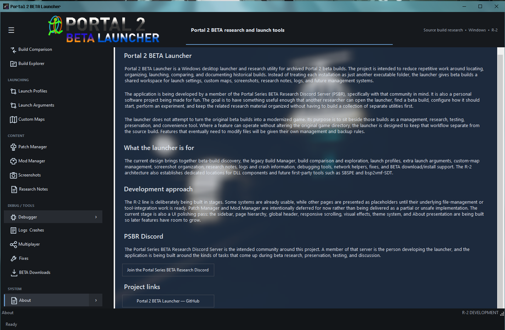

Previous R-2 release
R-2 BETA 1
Version 2.025.2-9.29.201-B · The first public beta of the rebuilt Portal 2 BETA Launcher.
Features in this release
- Redesigned Windows GUI with structured navigation and dedicated pages.
- Portal 2 beta build scanner for connected drives, user-accessible folders, and selected locations.
- Build list and Build Manager foundation for working with discovered builds.
- Launch selected beta builds with build-specific executable handling, command-line options, and launch-status feedback.
- Dedicated Settings and About areas.
- Saved settings and organized resource/data folders.
- Steam shortcut support and backup before modifying
shortcuts.vdf. - Bundled fix support and file backups before modification.
- Windows TCP port-forwarding helper.
- Foundation for the screenshot/in-game overlay and additional research tools.
This was an early R-2 beta. The in-game overlay and screenshot workflow were experimental in this release and were expanded in BETA 1.1.
Screenshot

Release notes
Some R-2 features were still in active development in this beta. For the latest tested feature set, see R-2 BETA 1.1.